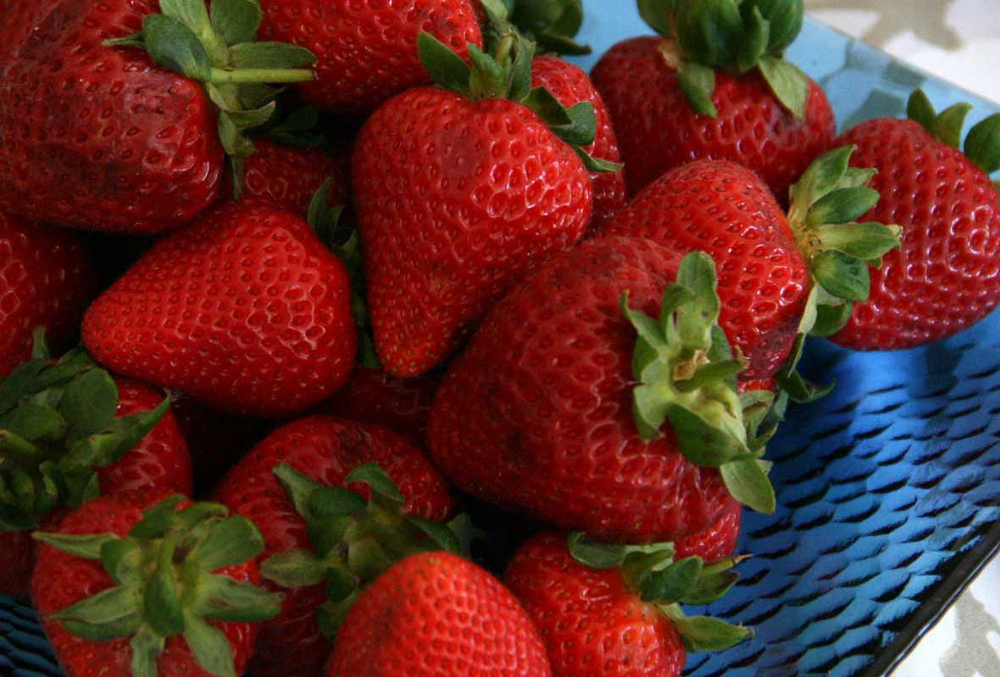
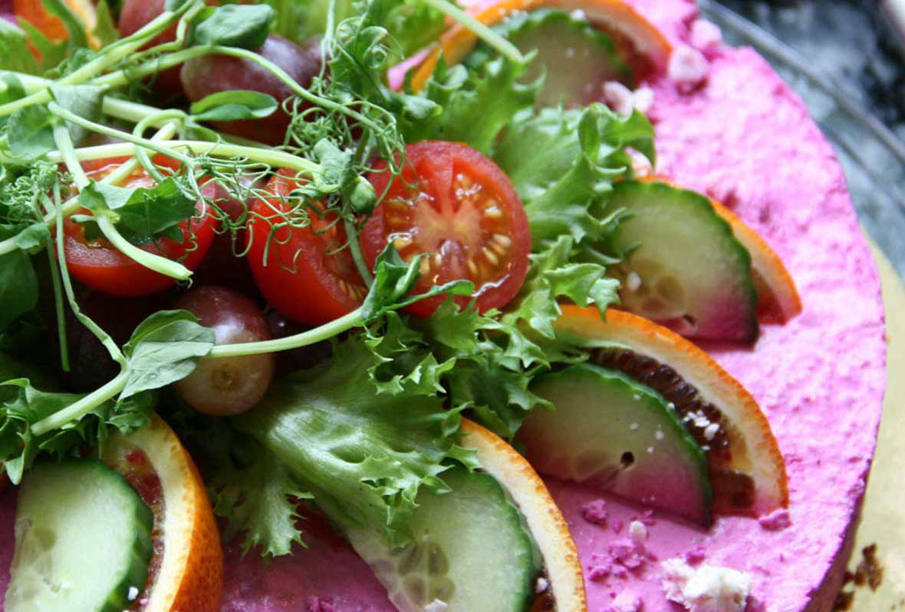

Slippry-现代时尚的jQuery响应式幻灯片插件 A Responsive slider plugin for jQuery
Shop

Everyone loves Strawberries. If you like bowls full of them, then you should buy this, it's really tasty and everyone will be jealous. You can put them in salads with feta or with icecream.
More informationBuy nowWhite flowers are for peace, so if you're fighting with someone, maybe you should buy them this?
More informationBuy now
Savoury cheesecake? What?! It sounds amazing to me! Throw on some walnuts and it's like a goatcheese, beetroot and walnut salad in cake form. Mmmmm cake.
More informationBuy nowThinking of giving someone some red roses? Did you know that in some cultures red roses are given to the mistress, while yellow roses are given to the true love? Save some awkwardness, go yellow.
More informationBuy now